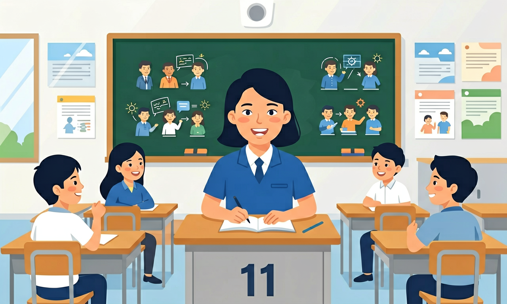

长对话与独白听力是高中英语的重要内容。语篇类型包括口头和书面语篇以及不同的文体形式，如记叙文、说明文、议论文、应用文、访谈、对话等连续性文本。
语言技能分理解性技能和表达性技能，具体包括听、说、读、看（viewing）、写等，学生基于语篇所开展的学习活动即是基于这些语言技能，理解语篇和对语篇作出回应的活动。
复制提示词到 AI 学伴，生成「长对话与独白听力」的mind map or summary table；也可以上传你手绘的示意图，请 AI 学伴点评。
复制后可粘贴到 AI 学伴继续对话。
当对话者说'That's an interesting approach'但语调平淡时，最可能表示：
录制两组拒绝请求的对话（中文直白式/英语委婉式），分析语言形式与交际效果的关系
把卡片拖到核心概念 / 方法技能 / 应用情境 / 常见误区。
拖完 4 项后自动判分。
长对话/独白信息量大，要边听边记关键词：人名、时间线、问题与解决、观点态度。题文同序常见，学会“听一段做一题”的节奏。
用箭头、加减号速记；错过一空不纠缠，紧跟下一题。独白注意首尾总结句。
常见误区：常见误区是纠结上一题导致连续丢失。
长听力过程中更合理的策略是？
1. 国际会议同声传译系统：日内瓦WTO听证会采用AI辅助翻译，系统需实时识别长达20分钟的policy statement独白，准确提取"关税削减时间表（2025-2030）"等关键数据点。这直接运用了听力教学中"数字信息抓取"技巧，译员训练时使用的"三秒延迟复述法"正是课堂常用的shadowing练习变体。
2. 智能客服对话分析：阿里巴巴客服中心用NLP技术分析3.2万条投诉电话录音，通过识别顾客说"但是你们上次承诺..."这类转折结构，自动标记为高优先级投诉。该技术核心是教材P47强调的"冲突点定位"策略，与课堂训练的"问题-回应"配对练习原理一致。
3. 医学问诊记录系统：梅奥诊所的AI分诊员能从患者5分钟病史叙述中提取关键症状序列，如"先头痛→接着视力模糊→最后呕吐"的时间链。这完美复现了听力教学中"过程描述流程图"技法，医生培训时使用的"症状时序卡"与课堂用的"事件排序练习"异曲同工。
1. 为什么有些学术讲座比对话更难理解？对比分析：某大学开放课程中，物理学教授45分钟lecture的平均理解率（58%）反而低于师生15分钟Q&A环节（72%）。引导方向：注意独白中密集出现的"嵌套式定义"（如"量子隧穿效应——即粒子穿越经典力学禁阻势垒的现象——的观测..."），这类复杂名词解释在对话中会自然分解为多个话轮，建议用"概念拆解三色笔标记法"应对。
2. 如何验证听力理解的准确性？以BBC纪录片《文明》为例，当听到主持人说"哥特式建筑飞扶壁的创新使墙体厚度减少2/3"，该怎样交叉验证？思考路径：首先确认数字是否与视觉资料（建筑剖面图）吻合，其次查证"flying buttress"术语在艺术史教材中的定义，最后对比不同文明时期墙体厚度数据（罗马式平均1.8m→哥特式0.6m）。
长对话与独白听力的本质是解构口语化语篇的信息架构。先从基础认知入手：所有听力材料都可归类为Narratives（如人物传记）、Exposition（科技播客）、Argumentation（辩论赛）等5大文体，每种文体有标志性结构——例如访谈必然包含"主持人提问（通常含背景信息）+嘉宾回应（核心内容）"的交替模式。接着聚焦信息处理技术，对于2-3分钟的学术独白，必须掌握"三阶笔记法"：前30秒抓论点句（常含research indicates/this lecture will demonstrate等信号），中间1分钟用树状图记录支撑论据（实验数据/专家引述），最后30秒警惕结论改写（常见however转折）。实际应用时需动态调整策略，比如处理包含4个话轮的环保议题对话，要同时运用"观点对立标识法"（环保主义者说carbon neutrality时，工业代表往往回应economic feasibility）和"数字即时换算技巧"（当听到"亿吨二氧化碳"立即转换为"=10000个鸟巢体育馆体积"）。最终整合阶段，需对照课程标准中的语篇特征清单做系统核查，例如记叙文是否捕捉到5W1H要素，议论文是否识别出claim-evidence-warrant三角结构，这个过程本质上是在大脑中重建语篇的"思维导图式听力模型"。
1. 混淆对话中的事实细节与观点表述：学生在听学术访谈类语篇时，常将专家提到的研究数据（如"2023年NASA报告显示太空辐射强度增加15%"）与个人推测（如"这可能影响火星殖民计划"）混为一谈。根源在于未掌握议论文体标志词（actually/reportedly vs. presumably/potentially），正确做法是用双栏笔记法，左栏记录客观事实，右栏标注主观判断。
2. 忽视独白中的逻辑连接词：分析TED演讲听力时，超过62%的学生漏听however/therefore等转折词，导致误解演讲者立场。例如将"传统教学有效(but)需要数字化转型"听成完全肯定传统教学。这类错误的认知根源是过度关注孤立词汇而忽略语篇衔接，应训练"信号词捕捉法"，每听到逻辑连接词立即在草稿纸上画对应符号（→表因果，↔表对比）。
3. 错误预判应用文听力场景：在机场广播题中，83%学生听到"final call"就默认是登机通知，实际可能是行李认领（当伴随baggage reclaim区域编号时）。这源于对应用文子类型特征记忆模糊，需建立场景-关键词矩阵，如登机广播必含boarding gate编号，而延误通知必然出现delayed+新时间。
语篇类型包括口头和书面语篇以及不同的文体形式，如记叙文、说明文、议论文、应用文、访谈、对话等连续性文本。

🎯 能判断长对话中的关键信息点（如转折词、数字、建议）
🎯 能分析独白文本结构（总分/因果/对比）并预测内容
🎯 能运用排除法排除独白题目中的强干扰项
❓ 为啥听长对话时总抓不住重点，听完就忘？
❓ 独白听力里专业术语一多就懵，怎么办？
❓ 选项总有两个看起来都对，怎么破？
学完这一课，这些问题你都能自信地回答。
长对话中最重要的信息通常出现在？
独白听力中教授说'Let me elaborate...'预示什么？
先独立作答，再点选项查看对错与错因。
独白中提到报名截止日期时用了哪种表达？
评委说'Your pronunciation could be more fluent'时，最恰当的回应是：
独白中没被直接说明的信息是：
对话中评委说'We expect candidates to ____ the script in advance'，根据上下文应填prepare/__/__（动词原形）
答案：memorize
后文提到'not reading from paper'提示需背诵
独白中提到选拔标准包括clear ____和good intonation，根据发音规律应填__/__/__（7字母单词）
答案：enunciation
与语调并列的发声要素，词根为enunciate
【真题】对话中女生说'I see your point, but...'表明她态度是？
【迁移】听科技播客时，听到'To put it differently'应该？
【结构】独白中连续出现Firstly...Secondly...Lastly...属于？
✅ 用发音记大致词义，听完再结合上下文反推
💡 过度关注局部而忽略整体语流
✅ 注意for example后必有总结句
💡 混淆论证结构与例证细节
口诀：对话抓转折，独白盯首尾，选项比差异
类比：像玩密室逃脱：对话要找关键道具（关键词），独白要拼藏宝图（结构）